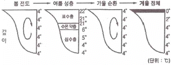
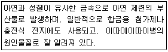
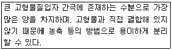
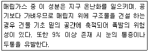

환경기능사 (2015-04-04 기출문제)
1과목: 대기오염방지
1. 공기에 작용하는 힘 중 “지구 자전에 의해 운동 하는 물체에 작용하는 힘”을 의미하는 것은?
- 경도력
- 원심력
- 구심력
- 전향력
(정답률: 71%)

2. 흡수장치의 종류를 액분산형과 기체분산력으로 나눌 때, 다음 중 기체분산형에 해당하는 것은?
- 충전탑
- 분무탑
- 단탑
- 벤츄리 스크러버
(정답률: 56%)
3. 전기집진기장치에서 입자의 대전과 집진된 먼지의 탈진이 정상적으로 진행되는 겉보기 고유저항의 범위로 가장 적합한 것은?
- 10-3~101 Ω·㎝
- 101~103 Ω·㎝
- 104~1011 Ω·㎝
- 1012~1015 Ω·㎝
(정답률: 75%)
4. 다음 집진장치 중 압력손실이 가장 큰 것은?
- 중력식 집진장치
- 사이클론
- 백필터
- 벤츄리 스크러버
(정답률: 82%)
5. 대기오염공정시험기준에서 제시된 배출가스 중 오염물질 측정방법의 연결이 옳지 않은 것은?
- 염소 – 오르토 톨리딘법
- 염화수소 – 질산은 적정법
- 시안화수소 – 인도 페놀법
- 황화수소 – 메틸렌 블루우법
(정답률: 64%)
6. 액체연료의 연소장치 중 유압식과 공기분무식을 합한 것으로 유압이 보통 7kg/cm2 이상이고, 연소가 양호하고 소형이며 전자동 연소가 가능한 것은?
- 유압분무식 버너
- 회전식 버너
- 선회버너
- 건타입 버너
(정답률: 62%)
7. 대기오염공정시험기준상 “방울수”의 의미로 옳은 것은?
- 10℃에서 정제수 10방울을 떨어뜨릴 때 그 부피가 약 1mL 되는 것을 뜻한다.
- 10℃에서 정제수 20방울을 떨어뜨릴 때 그 부피가 약 1mL 되는 것을 뜻한다.
- 20℃에서 정제수 10방울을 떨어뜨릴 때 그 부피가 약 1mL 되는 것을 뜻한다.
- 20℃에서 정제수 20방울을 떨어뜨릴 때 그 부피가 약 1mL 되는 것을 뜻한다.
(정답률: 74%)
8. 질소산화물을 촉매환원법으로 처리할 때, 어떤 물질로 환원되는가?
- N2
- HNO3
- CH4
- NO2
(정답률: 77%)
9. 집진장치 출구 가스의 먼지농도가 0.02g/m3, 먼지통과율은 0.5%일 때, 입구 가스의 먼지농도 (g/m3)는?
- 3.5g/m3
- 4.0g/m3
- 4.5g/m3
- 8.0g/m3
(정답률: 66%)
10. 중력 집진장치의 집진효율 향상 조건으로 옳지 않은 것은?
- 침강실 내의 처리가스 속도를 크게 한다.
- 침강실 내의 처리가스의 흐름을 균일하게 한다.
- 침강실의 높이를 작게 하고, 길이를 길게 한다.
- 다단일 경우에는 단수가 증가될수록 압력손실은 커지나 효율은 증가한다.
(정답률: 66%)
11. 다음 중 광화학스모그 발생과 가장 거리가 먼 것은?
- 질소산화물
- 일산화탄소
- 올레핀계 탄화수소
- 태양광선
(정답률: 53%)
12. 원심력 집진장치에서 50%의 집진율을 보이는 입자의 크기를 일컫는 용어는?
- 극한 입경
- 절단 입경
- 중간 입경
- 임계 입경
(정답률: 66%)
13. 다음 중 여과집진장치의 탈진방법으로 가장 거리가 먼 것은?
- 진동형
- 세정형
- 역기류형
- pluse jet형
(정답률: 65%)
14. 석탄의 탄화도가 클수록 가지는 성질에 관한 설명으로 옳지 않은 것은?
- 고정탄소의 양이 증가하고, 산소의 양이 줄어든 다.
- 연소속도가 작아진다.
- 수분 및 휘발분이 증가한다.
- 연료비(고정탄소 % / 휘발분 %)가 증가한다.
(정답률: 65%)
15. A 공장에서 SO2 농도 444ppm, 유량 52m3/h로 배출될 때, 하루에 배출되는 SO2의 양(kg)은? (단, 24시간 연속가동기준, 표준상태 기준)
- 1.58kg
- 1.67kg
- 1.79kg
- 1.94kg
(정답률: 27%)
2과목: 폐수처리
16. BOD농도 200mg/L, 유입 폐수량 800m3/일, 포기조 용량 200m3일 때 포기조에 유입되는 BOD 총부하량은?
- 1600kg/일
- 160kg/일
- 800kg/일
- 80kg/일
(정답률: 50%)
17. 하천의 정화 4단계 중 DO가 아주 낮거나 때로는 거의 없어 부패 상태에 도달하게 되는 단계는?
- 분해지대
- 활발한 분해지대
- 회복지대
- 정수지대
(정답률: 73%)
18. 폐수 중 중금속의 일반적 처리방법으로 가장 적합한 것은?
- 모래여과 처리
- 미생물학적 처리
- 화학적 처리
- 희석 처리
(정답률: 78%)
19. 하천에서의 자정작용을 저해하는 사항으로 가장 거리가 먼 것은?
- 유기물의 과도한 유입
- 독성 물질의 유입
- 유역과 수역의 단절
- 수중 용존산소의 증가
(정답률: 71%)
20. 수중 용존산소와 관련된 일반적인 설명으로 옳지 않은 것은?
- 온도가 높을수록 용존산소 값은 감소한다.
- 물의 흐름이 난류일 때 산소의 용해도는 높다.
- 유기물질이 많을수록 용존산소 값은 커진다.
- 일반적으로 용존산소 값이 클수록 깨끗한 물로 간주할 수 있다.
(정답률: 53%)
21. 직경 1m의 콘크리트 관에 20℃의 물이 동수구배 0.01로 흐르고 있다. 맨닝(Manning)공식에 의해 평균 유속을 구하면? (단, n=0.014이다.)
- 1.42m/s
- 2.83m/s
- 4.62m/s
- 5.71m/s
(정답률: 42%)
22. 폐수처리 유량이 2000m3/d이고, 염소요구량이 6.0mg/L, 잔류염소농도가 0.5mg/L일 때, 하루에 주입해야 할 염소량(kg/d)은?
- 6.0kg/d
- 6.5kg/d
- 12.0kg/d
- 13.0kg/d
(정답률: 30%)
23. 자-테스트(jar-test)와 관련이 깊은 것은?
- 경도
- 알칼리도
- 응집제
- 산도
(정답률: 64%)
24. 물을 끓여 쉽게 침전, 제거할 수 있는 경도유발 화합물은?
- MgCl2
- CaSO3
- CaCO3
- MgSO3
(정답률: 71%)
25. 폐수 처리 공정 중 여과에서 주로 제거되는 물질은?
- pH
- 부유물질
- 휘발성 물질
- 중금속 물질
(정답률: 80%)
26. 탈산소계수가 0.1/day인 오염물질의 BOD5=880mg/L 라면 3일 BOD(mg/L)는? (단, 상용대수 적용)
- 584
- 642
- 725
- 776
(정답률: 38%)
27. 다음 중 친온성 미생물의 성장속도가 가장 빠른 온도 분포는?
- 10℃ 부근
- 15℃ 부근
- 20℃ 부근
- 35℃ 부근
(정답률: 61%)
28. 지하수의 일반적인 특징으로 가장 거리가 먼 것은?
- 유기물 함량은 적으나, 무기물의 함량이 많고 자연수 중 경도가 아주 높다.
- 지표수에 비해 염분의 함량이 30% 정도 낮은 편이다.
- 자정작용이 속도가 느린 편이다.
- 지하수 성분조성은 하천수와 매우 흡사하나 지표수보다 경도가 높은 편이다.
(정답률: 52%)
29. 다음 중 물의 밀도로 옳지 않은 것은?
- 1g/cm3
- 1000kg/m3
- 1kg/L
- 0.1mg/mm3
(정답률: 57%)
30. 글리신(Glycine)의 이론적 산소요구량(g/mol)은? (단, 글리신의 분자식은 C2H5O2N 이며, 반응하여 CO2, H2O, HNO3로 된다.)
- 112
- 106
- 94
- 78
(정답률: 47%)
31. pH에 관한 설명으로 옳지 않은 것은?
- pH는 수소이온농도를 그 역수의 상용대수로서 나타내는 값이다.
- pH 표준액의 조제에 사용되는 물은 정제수를 증류하여 그 유출액을 15분 이상 끓여서 이산화탄소를 날려 보내고 산화칼슘 흡수관을 달아 식힌 후 사용 한다.
- pH 표준액 중 보통 산성표준액은 3개월, 염기성 표준액은 산화칼슘 흡수관을 부착하여 1개월 이내에 사용한다.
- pH 미터는 보통 아르곤전극 및 산화전극으로 된 지시부와 검출부로 되어 있다.
(정답률: 61%)
32. A하수처리장 유입수의 BOD가 225ppm이고, 유출수의 BOD가 46ppm 이었다면, 이 하수처리장의 BOD 제거율(%)은?
- 약 66
- 약 71
- 약 76
- 약 80
(정답률: 42%)
33. 그림은 호수에서의 수온 연직분포(깊이에 대한 온도)에 따른 계절별 변화를 나타낸 것이다. 이에 관한 설명으로 거리가 먼 것은?

- 수심이 깊은 온대 지방의 호수는 계절에 따른 수온변화로 물의 밀도차이를 일으킨다.
- 겨울에 수면이 얼 경우 얼음 바로 아래의 수온은 0℃에 가깝고 호수바닥은 4℃에 이르며 물이 안정한 상태를 나타낸다.
- 봄이 되면 얼음이 녹으면서 표면의 수온이 높아지기 시작하여 4℃가 되면 표층의 물은 밑으로 이동하여 전도가 일어난다.
- 여름에서 가을로 가면 표면의 수온이 내려가면서 수직적인 평형 상태를 이루어 봄과 다른 순환을 이루어 수질이 양호해진다.
(정답률: 67%)
34. 다음 중 콜로이드 물질의 크기 범위로 가장 적합한 것은?
- 0.001~1㎛
- 10~50㎛
- 100~1000㎛
- 1000~10000㎛
(정답률: 72%)
35. 다음에서 설명하는 오염물질로 가장 적합한 것은?

- 비소
- 크롬
- 시안
- 카드뮴
(정답률: 83%)
3과목: 폐기물처리
36. 다음 중 소각로의 형식이라 볼 수 없는 것은?
- 펌프식
- 화격자식
- 유동상식
- 회전로식
(정답률: 80%)
37. 5m3의 용기에 2.5kg의 쓰레기가 채워져 있다. 이 쓰레기의 겉보기 비중(kg/m3)은?
- 0.5kg/m3
- 1kg/m3
- 2kg/m3
- 2.5kg/m3
(정답률: 55%)
38. 슬러지 내 물의 존재 형태 중 다음 설명으로 가장 적합한 것은?

- 모관결합수
- 내부수
- 부착수
- 간극수
(정답률: 79%)
39. 폐수처리 공정에서 발생되는 슬러지를 혐기성으로 소화시키는 목적과 가장 거리가 먼 것은?
- 유해중금속 등의 화학물질을 분해시킨다.
- 슬러지의 무게와 부피를 감소시킨다.
- 이용가치가 있는 부산물을 얻을 수 있다.
- 병원균을 죽이거나 통제할 수 있다.
(정답률: 39%)
40. 다음 중 매립지에서 유기성 폐기물이 혐기성 상태로 분해될 때 가장 먼저 일어나는 단계는?
- 수소 생성단계
- 산 생성단계
- 메탄 생성단계
- 발효단계
(정답률: 48%)
41. 인구가 200000명인 지역에서 일주일 동안 수거한 쓰레기량은 15000m3이다. 1인당 1일 쓰레기 발생량은? (단, 쓰레기의 밀도는 0.5ton/m3이다.)
- 3.50kg/인·일
- 4.45kg/인·일
- 5.36kg/인·일
- 6.43kg/인·일
(정답률: 51%)
42. 산업폐기물 발생량을 추산할 때 이용되며, 상세한 자료가 있는 경우에만 가능하고, 비용이 많이 드는 단점이 있으므로 특수한 경우에만 사용되는 방법 은?
- 적재차량 계수분석
- 물질수지법
- 직접계근법
- 간접계근법
(정답률: 62%)
43. 쓰레기 발생량이 24000kg/일이고 발열량이 500kcal/kg 이라면 로내 열부하가 50000kcal/m3·h인 소각로의 용적은? (단, 1일 가동시간은 12hr이다.)
- 20m3
- 40m3
- 60m3
- 80m3
(정답률: 35%)
44. 공기 중 각 구성물질의 낙하속도 및 공기 저항의 차이에 따라 폐기물을 선별하는 방법으로, 주로 종이나 플라스틱과 같은 가벼운 물질을 유리, 금속 등의 무거운 물질로부터 분리하는데 효과적으로 사용되는 방법은?
- 손 선별
- 스크린 선별
- 공기 선별
- 자력 선별
(정답률: 74%)
45. 타 공법에 비해 옥외 뒤집기식 퇴비화 공법에 관한 설명으로 가장 거리가 먼 것은?
- 설치비용은 일반적으로 낮은 편이다.
- 날씨에 따른 영향이 거의 없다.
- 부지소요면적이 큰 편이다.
- 악취제어는 주입물에 의해 좌우되며, 악취영향 반경이 큰 편이다.
(정답률: 75%)
46. 전단파쇄기에 관한 설명으로 옳지 않은 것은?
- 고정칼, 왕복 또는 회전칼과의 교합에 의해 폐기물을 전단한다.
- 주로 목재류, 플라스틱류 및 종이류를 파쇄 하는데 이용된다.
- 파쇄물의 크기를 고르게 할 수 있는 장점이 있다.
- 충격파에 비해 파쇄속도가 빠르고, 이물질의 혼입에 대하여 강하다.
(정답률: 69%)
47. 소각로의 종류 중 다단로(multiple hearth)의 특성으로 거리가 먼 것은?
- 다량의 수분이 증발되므로 수분함량이 높은 폐기물도 연소가 가능하다.
- 체류시간이 짧아 온도반응이 신속하다.
- 많은 연소영역이 있으므로 연소효율을 높일 수 있다.
- 물리·화학적 성분이 다른 각종 폐기물을 처리할 수 있다.
(정답률: 70%)
48. 내륙 매립공법 중 샌드위치공법에 관한 설명으로 거리가 먼 것은?
- 폐기물과 복토층을 교대로 쌓는 방식이다.
- 협곡, 산간 및 폐광산 등에서 사용한다.
- 외곽에 우수배제시설이 필요하다.
- 현재 가장 널리 사용하는 공법이다.
(정답률: 65%)
49. 다음은 매립가스 중 어떤 성분에 관한 설명인가?

- CH4
- CO2
- N2
- NH3
(정답률: 62%)
50. 배출상태에 따라 폐기물을 분류할 때 “액상폐기 물”은 고형물의 함량이 얼마인 것을 말하는가?
- 5% 미만
- 10% 미만
- 15% 미만
- 30% 미만
(정답률: 57%)
51. 폐기물의 수거노선을 결정할 때 고려해야 할 사항으로 거리가 먼 것은?
- 가능한 한 지형지물 및 도로경계와 같은 장벽을 이용하여 간선도로 부근에서 시작하고 끝나도록 배치한다.
- 출발점은 차고지와 가깝게 하고 수거된 마지막 콘테이너가 처분지에 가장 가까이 위치하도록 배치한다.
- 교통이 혼잡한 지역에서 발생되는 쓰레기는 가능한 출퇴근 시간을 피하여 새벽에 수거한다.
- 아주 적은 양의 쓰레기가 발생되는 발생원은 하루 중 가장 먼저 수거한다.
(정답률: 84%)
52. 폐기물 고체연료(RDF)의 구비조건으로 옳지 않은 것은?
- 열량이 높을 것
- 함수율이 높을 것
- 대기 오염이 적을 것
- 성분 배합률이 균일할 것
(정답률: 79%)
53. 원자흡광광도 측정에 사용되는 가연성가스와 조연성 가스의 조합 중 불꽃의 온도가 높아 불꽃 중에서 해리하기 어려운 내화성 산화물을 만들기 쉬운 원소의 분석에 가장 적합한 것은?
- 아세틸렌-일산화이질소
- 프로판-공기
- 수소-공기
- 석탄가스-공기
(정답률: 61%)
54. 친산소성 퇴비화 공정의 설계 및 운영 시 고려 인자에 관한 설명으로 옳지 않은 것은?
- 퇴비단의 온도는 초기 며칠간은 50~55℃를 유지하여야 하며, 활발한 분해를 위해서는 55~60℃가 적당하다.
- 적당한 분해작용을 위해서는 pH 5.5~6.5 범위를 유지하되, 암모니아 가스에 의한 질소손실을 줄이기 위해서는 pH는 3.5~4.5범위로 유지시킨다.
- 퇴비화 기간 동안 수분함량은 50~60% 범위에서 유지시킨다.
- 초기 C/N비는 25~50 정도가 적당하다.
(정답률: 59%)
55. 옥탄(C 8 H 18)을 이론공기량으로 완전연소시킬 때 질량기준 공기연료비(AFR, Air/Fuel Ratio)는?
- 12
- 15
- 18
- 21
(정답률: 32%)
4과목: 소음 진동학
56. 환경적 측면에서 문제가 되는 진동 중 특별히 인체에 해를 끼치는 공해진동의 진동수의 범위로 가장 적합한 것은?
- 1~90Hz
- 0.1~500Hz
- 20~12500Hz
- 20~20000Hz
(정답률: 56%)
57. 음향출력이 100w인 점음원이 지상에 있을 때 12m 떨어진 지점에서의 음의 세기는?
- 0.11w/m2
- 0.16w/m2
- 0.20w/m2
- 0.26w/m2
(정답률: 38%)
58. 공기스프링에 관한 설명으로 가장 거리가 먼 것은?
- 부하능력이 광범위하다.
- 공기누출의 위험성이 없다.
- 사용진폭이 적은 것이 많으므로 별도의 댐퍼가 필요한 경우가 많다.
- 자동제어가 가능하다.
(정답률: 59%)
59. 100sone인 음은 몇 phon인가?
- 106.6
- 101.3
- 96.8
- 88.9
(정답률: 40%)
60. 다음 중 한 파장이 전파되는데 소요되는 시간을 말하는 것은?
- 주파수
- 변위
- 주기
- 가속도레벨
(정답률: 70%)